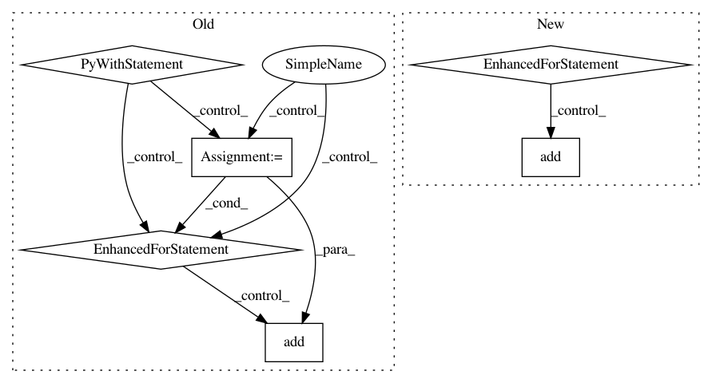

70a188776f7470c838dd22b1636462b75573a734,src/gluonnlp/models/bert.py,BertTransformer,__init__,#BertTransformer#Any#Any#Any#Any#Any#Any#Any#Any#Any#Any#Any#Any#Any#Any#Any#,110
Before Change
self._output_attention = output_attention
self._output_all_encodings = output_all_encodings
with self.name_scope():
self.all_layers = nn.HybridSequential(prefix="layers_")
with self.all_layers.name_scope():
for layer_idx in range(num_layers):
self.all_layers.add(
TransformerEncoderLayer(units=units,
hidden_size=hidden_size,
num_heads=num_heads,
attention_dropout_prob=attention_dropout_prob,
hidden_dropout_prob=hidden_dropout_prob,
layer_norm_eps=layer_norm_eps,
weight_initializer=weight_initializer,
bias_initializer=bias_initializer,
activation=activation,
prefix="{}_".format(layer_idx)))
def hybrid_forward(self, F, data, valid_length):
Generate the representation given the inputs.
After Change
self.embed_layer_norm = nn.LayerNorm(epsilon=self.layer_norm_eps)
self.embed_dropout = nn.Dropout(hidden_dropout_prob)
// Construct token type embedding
self.token_type_embed = nn.Embedding(input_dim=num_token_types,
output_dim=units,
weight_initializer=weight_initializer)
self.token_pos_embed = PositionalEmbedding(units=units,
max_length=max_length,
dtype=self._dtype,
method=pos_embed_type)
if self.use_pooler:
// Construct pooler
self.pooler = nn.Dense(units=units,
in_units=units,
flatten=False,
activation="tanh",
weight_initializer=weight_initializer,
In pattern: SUPERPATTERN
Frequency: 3
Non-data size: 6
Instances
Project Name: dmlc/gluon-nlp
Commit Name: 70a188776f7470c838dd22b1636462b75573a734
Time: 2020-07-16
Author: lausen@amazon.com
File Name: src/gluonnlp/models/bert.py
Class Name: BertTransformer
Method Name: __init__
Project Name: ray-project/ray
Commit Name: 34bae27ac7d3c39335a2b8c7d4cd4efba56aa398
Time: 2020-06-12
Author: ekhliang@gmail.com
File Name: rllib/execution/replay_buffer.py
Class Name: LocalReplayBuffer
Method Name: add_batch
Project Name: dmlc/gluon-nlp
Commit Name: 70a188776f7470c838dd22b1636462b75573a734
Time: 2020-07-16
Author: lausen@amazon.com
File Name: src/gluonnlp/models/roberta.py
Class Name: RobertaEncoder
Method Name: __init__